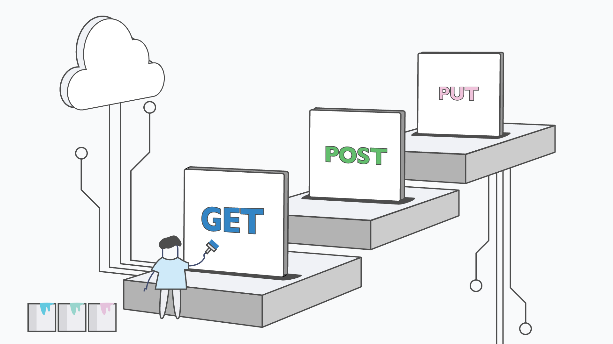
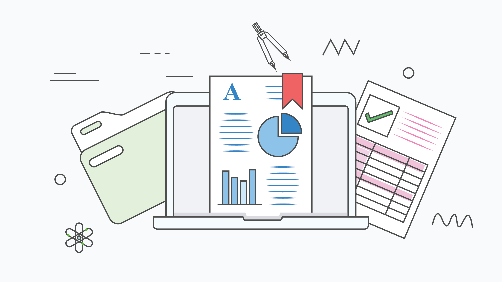

a Bay Area product designer with a decade of experience shaping enterprise SaaS. I turn complex systems into clear, confident workflows—and help teams make the product decisions behind them.

Establishing a scalable API monitoring foundation—from configuration to diagnosis.
Giving helpdesk teams an agent-level lens for fast, defensible troubleshooting.

Connecting planning, evidence, and accountability across higher education institutions.
Making local inventory and pickup confidence visible at the moment of choice.
Reframing pickup as an end-to-end service across digital and in-store moments.